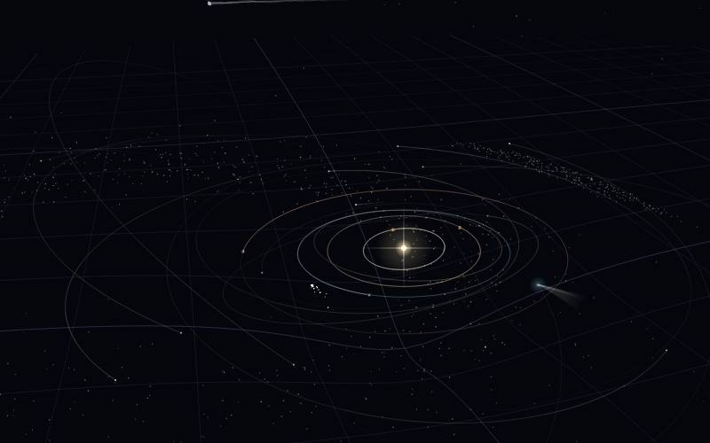
Play ▸🪐Barycenter
Gravity, planets, stars and black holes
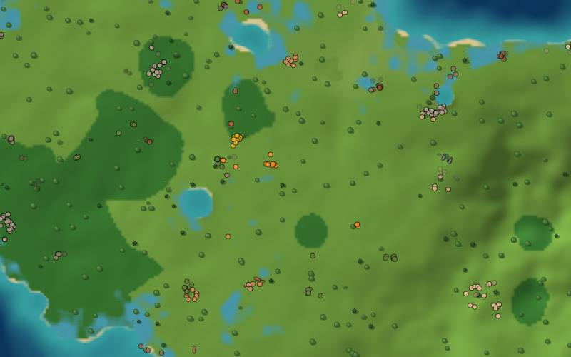
Play ▸🌿Biosphere
A living world of animals, plants and people
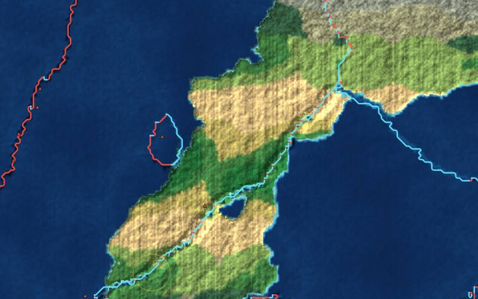
Play ▸🌋Lithosphere
Drift continents, raise mountains and set off volcanoes
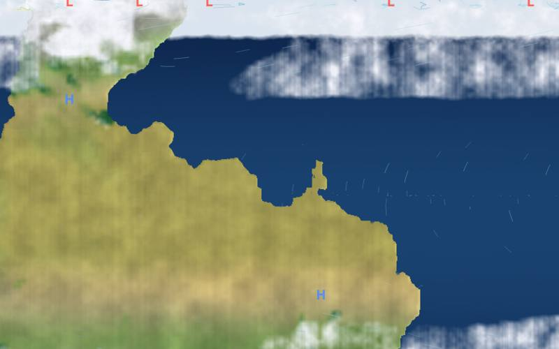
Play ▸🌀Troposphere
Steer winds, brew hurricanes and change the climate
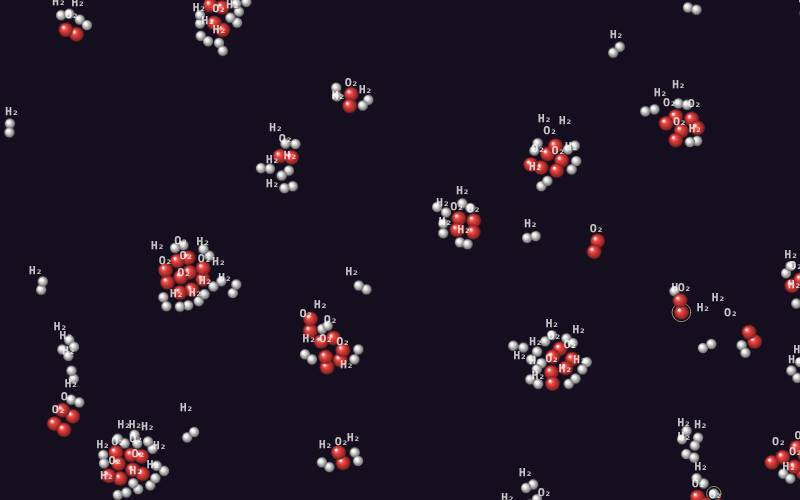
Play ▸⚛️Catalyst
Mix atoms, spark reactions and build molecules
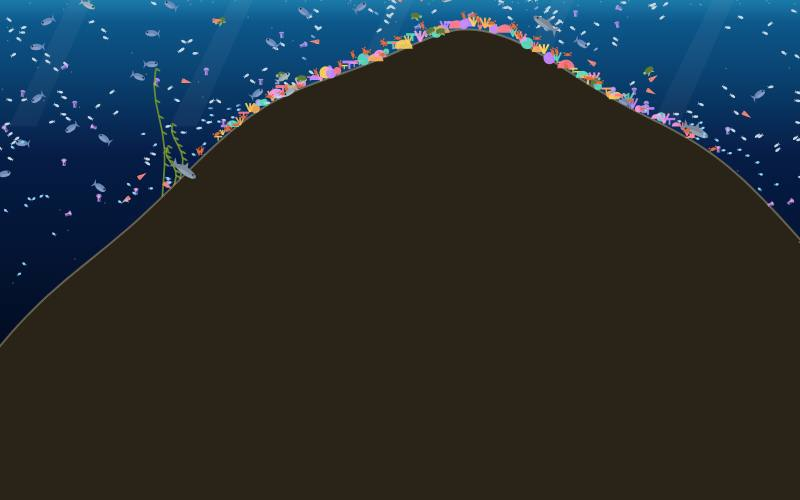
Play ▸🐋Abyssal
Dive into a living ocean, from coral reefs to the deep sea
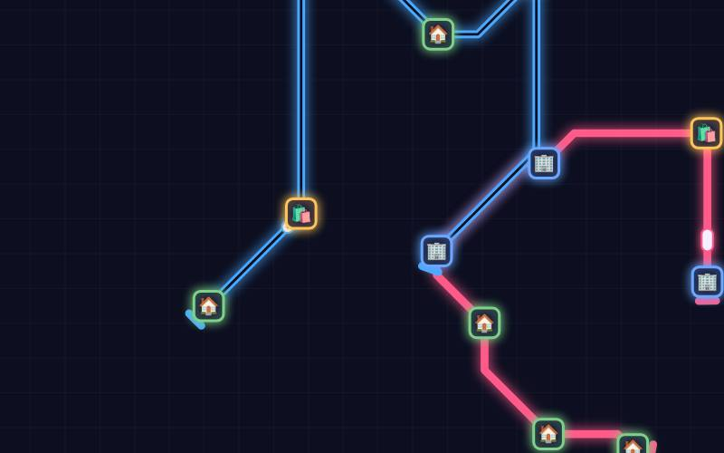
Play ▸🚉Interchange
Draw the transit lines of a growing city and keep everyone moving
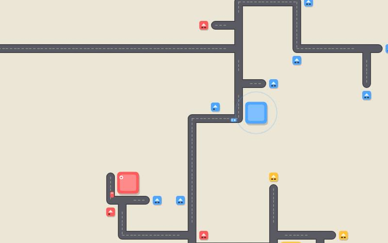
Play ▸🚗Gridlock
Draw the roads of a growing town and keep the traffic flowing
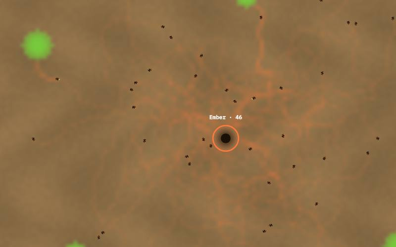
Play ▸🐜Hivemind
Ant colonies that find food by following each other's scent trails
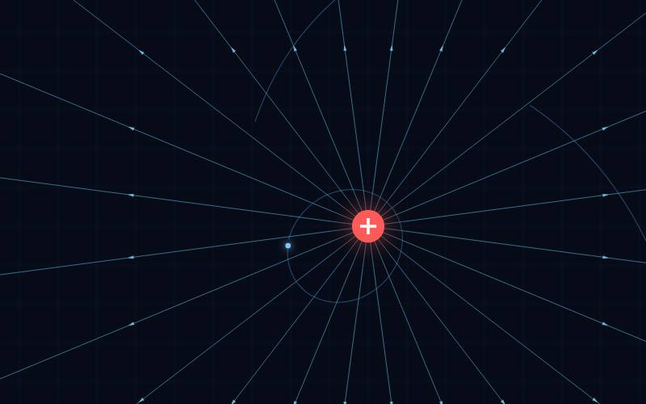
Play ▸⚡Flux
Place charges and magnets, and watch the fields bend particles through space
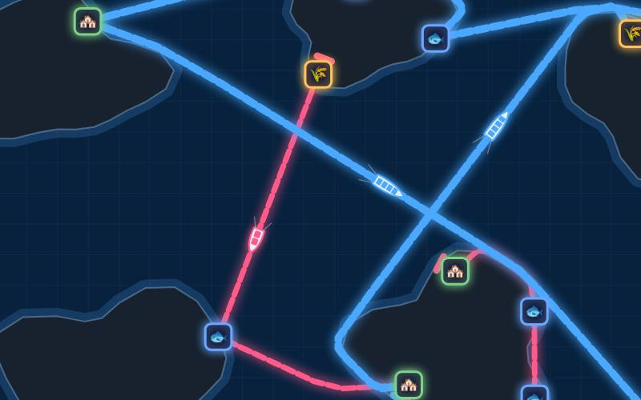
Play ▸🚢Seaway
Run the shipping lanes of a sea full of islands and keep the cargo moving
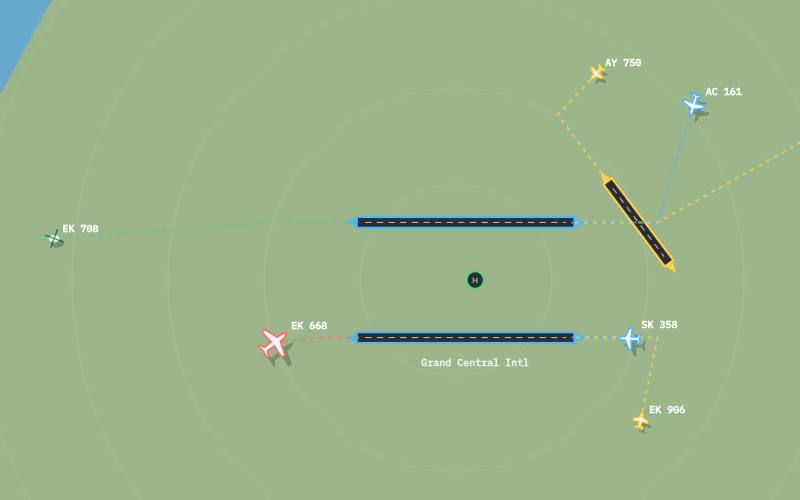
Play ▸✈️Contrail
Guide planes onto runways, keep them apart and run a busy airport